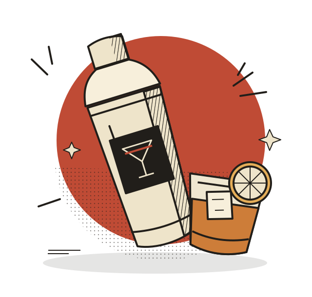

PEQUEÑA TECNOLOGÍA. GRAN COCTELERÍA.
EL ARTE ESTÁ
EN TUS MANOS.
Un buen cóctel empieza con un gesto.
Aprende, practica y encuentra tu ritmo detrás de la barra.
¿Sin coctelera? Prueba el simulador.Has abierto MixLab como archivo: así el navegador apaga el Bluetooth. Sirve app/ por HTTP y entra por localhost, o usa el simulador.Sin https:// ni localhost el navegador no deja usar Bluetooth. Usa el simulador.
FIG. 01 / EL GESTO LO CAMBIA TODO

Un poco de ciencia.Mucho de oficio.
A MANO